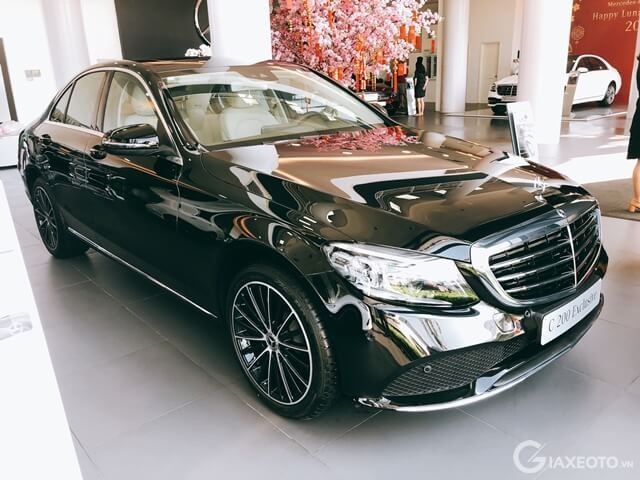
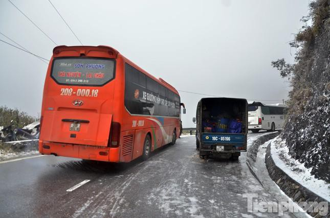
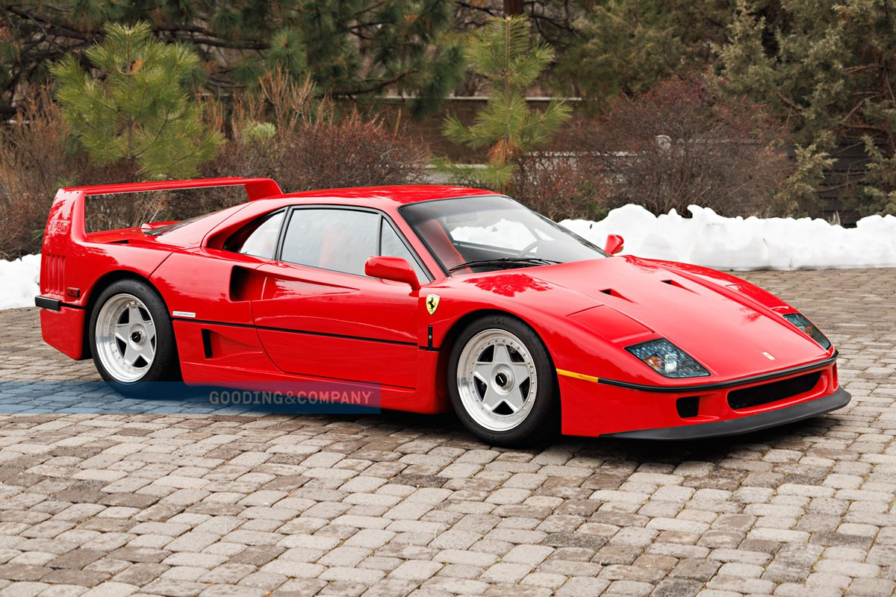
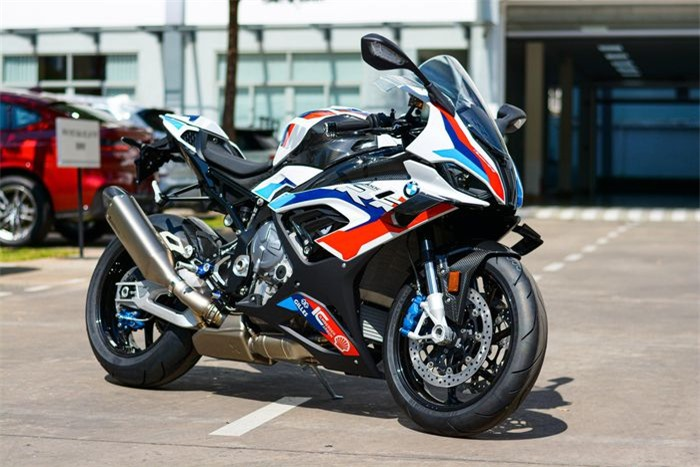

Xe Mercedes Benz mới nhất
Mới đây công ty Mercedes đã cho ra mắt mẫu xe mới...
Mercedes-Benz G-Class (hay G-Wagen) là dòng xe SUV địa hình, 4-6 bánh (4x4 và 6x6), cỡ trung, hạng sang được sản xuất bởi Magna Steyr (Áo) và được bán dưới thương hiệu Mercedes-Benz (Đức) từ năm 1979. Cái tên Mercedes AMG G63 xuất hiện lần đầu năm 2002, là mẫu xe được bộ phận AMG độ thêm về hiệu năng để trở thành mẫu off-road tiêu biểu của dòng G-Class.
NASA vừa công bố mẫu xe tự hành đi trên mặt trăng
Thứ năm, 6/1/2022, 17:54 (GMT+7)

Xe tự hành là cực kì xịn xò tuy nó có giá ở trên cung trăng nhưng nếu người nào có thể sở hữu 1 chiếc chạy ngoài đường thì hết số dzách
Tỷ phú Cường Dolla vừa tậu cho con gái 2 tháng tuổi của mình 2 chiếc siêu xe cực đỉnh
Thứ năm, 6/1/2022, 12:10 (GMT+7)
Mặc dù con gái chỉ vừa mới tròn 2 tháng tuổi nhưng Cường Dolla đã mua cho con gái 2 chiếc xế hộp để chở con đi hóng mát
Lái xe khi đường đóng băng, trơn trượt cần lưu ý gì?
Thứ năm, 6/1/2022, 11:16 (GMT+7)
Khi lái xe qua khu vực này, tài xế nên cẩn trọng tới mức tuyệt đối để không gặp tai nạn. Anh Hùng, tài xế dịch vụ đã trải nghiệm các tuyến đường đóng băng chia sẻ: "Chúng ta không thể chủ quan khi gặp tình huống này. Hãy đi thật chậm rãi, cẩn thận. Khi nhận thấy không thể đạt an toàn thì phải dừng xe. Nếu cố chấp đi tiếp thì người lái và hành khách sẽ gặp nhiều nguy hiểm"
Chiếc Ferrari F40 hàng hiếm có thể có giá hơn 2,8 triệu USD
Thứ tư, 5/1/2022, 12:00 (GMT+7)
Một chiếc Ferrari F40 đời 1991 với ngoại hình khá đẹp mắt sẽ được bán đấu giá tại sự kiện Gooding & Company’s Amelia Island được tổ chức vào ngày 4/3 sắp tới và dự kiến thu về cho chủ nhân 2,4-2,8 triệu USD.
Chi tiết siêu môtô BMW M 1000 RR tại Việt Nam
Thứ tư, 5/1/2022, 10:00 (GMT+7)
BMW M 1000 RR được giới thiệu lần đầu tiên vào tháng 9/2020. Sau gần 1,5 năm, mẫu sportbike này đã xuất hiện tại Việt Nam dưới dạng xe nhập khẩu chính hãng. Giá bán chính thức của BMW M 1000 RR không được tiết lộ.
Giới thiệu
Elon Musk giới thiệu xe
Follow Me

Liên hệ
Fanpage: https://www.facebook.com/Banxe.com.vn
Email: duynpnps21413@fpt.edu.vn
SĐT: 0368545718